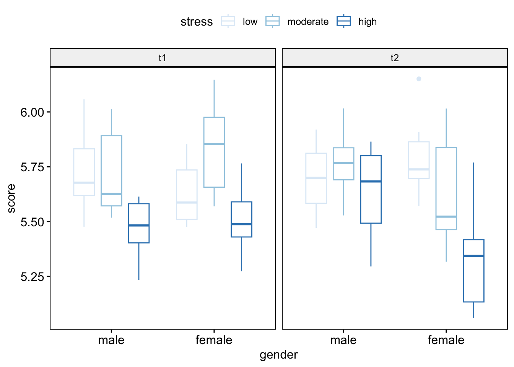

§ Chapter3 ANOVA (Analysis of Variance)
ANOVA is a method to compare the means of a continuous variable between groups of a categorical independent variable. Specifically, it looks at how variability of data between groups and compares that to data within groups.
ANOVA applies when the dependent variable (Y) is continuous, and independent variable (x) is categorical(independent within groups).
Simply to say, ANOVA tells us if there are any statistical differences between the means of three or more independent groups.
- Asuumptions:
- Normality (use Normaily test)
- Equal Variances (use Bartlett’s or levene’s test)
- No significant outliers in the different groups.
3.1 One-Way ANOVA
- Assumption:
- The data constitute random samples from normal populations.
- These normal populations all have the same variance.
- Samples are independent.
- Hypotheses:
\[\begin{align} & H_0 : \mu_1 = \mu_2 = ... = \mu_k ~~ (The ~ means ~ of ~ all ~ the ~ groups ~ are ~ equal) \\ & H_a : \mu_i \not= \mu_j, ~ for ~ some ~ i \not= j ~~ (At ~ least ~ one ~ of ~ the ~ means ~ is ~ different ~ from ~ the ~ others) \end{align}\]
☕Example:
Data : 【Modern Elementary Statistics (11th Edition): John E. Freund】
A laboratory technician wants to compare the breaking strength of three kinds of thread and originally he had planned to repeat each determination six times. Not having enough time, however, he has to base his analysis on the following results (in ounces):
| Thread1 | 18.0 16.4 15.7 19.6 16.5 18.2 |
| Thread2 | 21.1 17.8 18.6 20.8 17.9 19.0 |
| Thread3 | 16.5 17.8 16.1 |
Assuming that these data constitute random samples from three normal populations with the same standard deviation, perform an analysis of variance to test at the 0.05 level of significance whether the differences among the sample means are significant.
Because ANOVA is a type of linear model,
We can run ANOVA in R using aov() and lm().
lab <- read.table('data/aov1.txt', header=TRUE)
aov.lab = aov(strength ~ group, data=lab)
summary(aov.lab)## Df Sum Sq Mean Sq F value Pr(>F)
## group 2 15.12 7.560 4.061 0.045 *
## Residuals 12 22.34 1.862
## ---
## Signif. codes: 0 '***' 0.001 '**' 0.01 '*' 0.05 '.' 0.1 ' ' 1## Analysis of Variance Table
##
## Response: strength
## Df Sum Sq Mean Sq F value Pr(>F)
## group 2 15.12 7.5600 4.0609 0.04499 *
## Residuals 12 22.34 1.8617
## ---
## Signif. codes: 0 '***' 0.001 '**' 0.01 '*' 0.05 '.' 0.1 ' ' 1## Tukey multiple comparisons of means
## 95% family-wise confidence level
##
## Fit: aov(formula = strength ~ group, data = lab)
##
## $group
## diff lwr upr p adj
## b-a 1.8 -0.3016189 3.901619 0.0967824
## c-a -0.6 -3.1739470 1.973947 0.8111220
## c-b -2.4 -4.9739470 0.173947 0.0684768- \(H_0: \mu_1 =\mu_2=\mu_3\) v.s. \(H_a:\) The \(\mu_i\) are not all equal.
- \(\alpha=0.05\)
- Reject the null hypothesis if \(F>F_{0.05}(2,12)=3.89\) , where\(K-1=2\) , and \(N-K=15-3=12\).
- Since \(F=4.06\) exceeds \(3.89\), the null hypothesis must be rejected; in other words, we conclude that there is a difference in the strength of the three kinds of thread.
- Now we want to know where inequalities exists among the different 3 means. Tukey’s Method is to test all possible pairwise differences of means to determine if at least one difference is significantly different from 0.
- Assume the 90% confidence coefficient, The simultaneous pairwise comparisons indicate that the differences of \(\mu_3-\mu_1\) are not significantly different from 0 (their confidence intervals include 0).
3.2 One-Way Repeated Msearures ANOVA
The repeated-measures ANOVA is used for analyzing data where same subjects are measured more than once. This test is also referred to as a within-subjects ANOVA or ANOVA with repeated measures. One-way repeated measures ANOVA, an extension of the paired-samples t-test for comparing the means of three or more levels of a within-subjects variable.
☕Example:
Researchers want to know if 4 different drugs lead to different reaction times. To test this, they measure the reaction time of 5 patients on the 4 different drugs. Since each patient is measured on each of the 4 drugs, we will use a repeated measures ANOVA to determine if the mean reaction time differs between drugs.
patientdata <- data.frame(patient=rep(1:5, each=4),
drug=rep(1:4, times=5),
response=c(30, 28, 16, 34,
14, 18, 10, 22,
24, 20, 18, 30,
38, 34, 20, 44,
26, 28, 14, 30))
# Fit one way repeated with aov
oneRMaov <- aov(response ~ factor(drug) + Error( factor(patient)), data = patientdata)
summary (oneRMaov)##
## Error: factor(patient)
## Df Sum Sq Mean Sq F value Pr(>F)
## Residuals 4 680.8 170.2
##
## Error: Within
## Df Sum Sq Mean Sq F value Pr(>F)
## factor(drug) 3 698.2 232.7 24.76 1.99e-05 ***
## Residuals 12 112.8 9.4
## ---
## Signif. codes: 0 '***' 0.001 '**' 0.01 '*' 0.05 '.' 0.1 ' ' 1# Fit one way repeated with anova_test
oneRMaovtest <- anova_test(data = patientdata, dv = response, wid = patient, within = drug )
get_anova_table(oneRMaovtest)## ANOVA Table (type III tests)
##
## Effect DFn DFd F p p<.05 ges
## 1 drug 3 12 24.759 1.99e-05 * 0.468Since p-value is less than 0.05, we reject the null hypothesis and conclude that there is a statistically significant difference in mean response times between the four drugs. The type of drug used lead to statistically significant differences in response time.
3.3 Two-Way ANOVA (with Interaction)
- Assumption:
- Normal distribution of variables.
- Homoscedasticity: In a two-way ANOVA test, the variance should be homogenous.
- Samples are independent.
- Hypotheses:
\(H_0\) : The population means of the factorA are equal.
\(H_a\) : The population means of the factorA are not equal.\(H_0\) : The population means of the factorB are equal.
\(H_a\) : The population means of the factorB are not equal.\(H_0\) : There is no interaction between the two factors.
\(H_a\) : There is interaction between the two factors.
☕Example:
To test this hypothesis an experiment was designed in which Festuca seedlings were grown in pots at all combinations of two levels of two different kinds of treatment:
Factor 1: Soil pH at 3.5 or 5.5
Factor 2: Presence or absence of Calluna.
| pH 3.5 | pH 5.5 | |
|---|---|---|
| Calluna Present | 2.76, 2.39, 3.54, 3.71, 2.49 | 3.21, 4.10, 3.04, 4.13, 5.21 |
| Calluna Absent | 4.10, 2.72, 2.28, 4.43, 3.31 | 5.92, 7.31, 6.10, 5.25, 7.45 |
library("ggplot2")
festuca <- read.csv ( "data/festuca.csv")
ggplot(data = festuca, aes(x = Calluna, y = Weight, colour = pH)) +
geom_boxplot() + scale_color_brewer(palette="Blues") #Fitting two-way ANOVA model with aov
aov.festuca <- aov(Weight ~ pH + Calluna + pH : Calluna, data = festuca)
summary(aov.festuca)## Df Sum Sq Mean Sq F value Pr(>F)
## pH 1 19.980 19.980 28.179 7.07e-05 ***
## Calluna 1 10.210 10.210 14.400 0.00159 **
## pH:Calluna 1 5.398 5.398 7.613 0.01397 *
## Residuals 16 11.345 0.709
## ---
## Signif. codes: 0 '***' 0.001 '**' 0.01 '*' 0.05 '.' 0.1 ' ' 1#Fitting two-way ANOVA model with lm
lm.festuca <- lm(Weight ~ pH + Calluna + pH : Calluna, data = festuca)
anova(lm.festuca)## Analysis of Variance Table
##
## Response: Weight
## Df Sum Sq Mean Sq F value Pr(>F)
## pH 1 19.9800 19.9800 28.1792 7.065e-05 ***
## Calluna 1 10.2102 10.2102 14.4001 0.00159 **
## pH:Calluna 1 5.3976 5.3976 7.6126 0.01397 *
## Residuals 16 11.3446 0.7090
## ---
## Signif. codes: 0 '***' 0.001 '**' 0.01 '*' 0.05 '.' 0.1 ' ' 1p < 0.05 for three effects, so we conclude both factors and the interaction are significant.
## Tukey multiple comparisons of means
## 95% family-wise confidence level
##
## Fit: aov(formula = Weight ~ pH + Calluna + pH:Calluna, data = festuca)
##
## $`pH:Calluna`
## diff lwr upr p adj
## pH5.5:Absent-pH3.5:Absent 3.038 1.5143518 4.5616482 0.0001731
## pH3.5:Present-pH3.5:Absent -0.390 -1.9136482 1.1336482 0.8826936
## pH5.5:Present-pH3.5:Absent 0.570 -0.9536482 2.0936482 0.7117913
## pH3.5:Present-pH5.5:Absent -3.428 -4.9516482 -1.9043518 0.0000443
## pH5.5:Present-pH5.5:Absent -2.468 -3.9916482 -0.9443518 0.0014155
## pH5.5:Present-pH3.5:Present 0.960 -0.5636482 2.4836482 0.3079685There are three significant differences, all of which involve the treatment combinations pH 5.5 with Calluna absent.
Summary of the analysis: there were significant effects of soil pH (ANOVA: F=28.18, df=1,16, p<0.001), competition with Calluna (F=14.4, df=1,16, p=0.002) and the interaction between these treatments (F=7.61, df=1,16, p=0.014) on the dry weight yield of Festuca. Festuca grew much better in the absence of Calluna at pH 5.5 than in any other treatment combination (Tukey multiple comparison test p<0.05).
3.4 Two-Way Repeated Msearures ANOVA
Two-Way Repeated Measures ANOVA, means that there aretwo factors in the experiment, for example, different treatments and different conditions. Repeated-measures means that the same subject received more than one treatment and/or more than one condition. Similar to two-way ANOVA, two-way repeated measures ANOVA can be employed to test for significant differences between the factor level means within a factor and for interactions between factors.
☕Example:
selfesteem2dataset [datarium package] are the self esteem score of 12 individuals enrolled in 2 successive short-term trials (4 weeks) - control (placebo) and special diet trials.The self esteem score was recorded at three time points: at the beginning (t1), midway (t2) and at the end (t3) of the trials.
The same 12 participants are enrolled in the two different trials with enough time between trials.
Two-way repeated measures ANOVA can be performed in order to determine whether there is interaction between time and treatment on the self esteem score.
data("selfesteem2", package = "datarium")
# Gather the columns t1, t2 and t3 into long format.
# Convert id and time into factor variables
selfesteem2Data <- selfesteem2 %>%
gather(key = "time", value = "score", t1, t2, t3) %>%
convert_as_factor(id, time)
# Fit Two Way Repeat with aov
twoRMaov <- aov ( score ~ treatment*time + Error(id/ (treatment*time) ), data = selfesteem2Data)
summary (twoRMaov)##
## Error: id
## Df Sum Sq Mean Sq F value Pr(>F)
## Residuals 11 4641 421.9
##
## Error: id:treatment
## Df Sum Sq Mean Sq F value Pr(>F)
## treatment 1 316.7 316.7 15.54 0.0023 **
## Residuals 11 224.2 20.4
## ---
## Signif. codes: 0 '***' 0.001 '**' 0.01 '*' 0.05 '.' 0.1 ' ' 1
##
## Error: id:time
## Df Sum Sq Mean Sq F value Pr(>F)
## time 2 258.7 129.35 27.37 1.08e-06 ***
## Residuals 22 104.0 4.73
## ---
## Signif. codes: 0 '***' 0.001 '**' 0.01 '*' 0.05 '.' 0.1 ' ' 1
##
## Error: id:treatment:time
## Df Sum Sq Mean Sq F value Pr(>F)
## treatment:time 2 266.36 133.18 30.42 4.63e-07 ***
## Residuals 22 96.31 4.38
## ---
## Signif. codes: 0 '***' 0.001 '**' 0.01 '*' 0.05 '.' 0.1 ' ' 1# Fit Two Way Repeat with anova_test
twoRMaovtest <- anova_test(
data = selfesteem2Data, dv = score, wid = id,
within = c(treatment, time)
)
get_anova_table(twoRMaovtest)## ANOVA Table (type III tests)
##
## Effect DFn DFd F p p<.05 ges
## 1 treatment 1.00 11.00 15.541 2.00e-03 * 0.059
## 2 time 1.31 14.37 27.369 5.03e-05 * 0.049
## 3 treatment:time 2.00 22.00 30.424 4.63e-07 * 0.050There is a statistically significant two-way interactions between treatment and time, F(2, 22) = 30.42, p < 0.0001.
Before fit ANOVA model, should check normality、Homogneity、no outliers assumptions.
After fit ANOVA model, should run Post-hoc tests.
3.5 Factorial ANOVA
Many experiments involve the study of the effects of more factors. By a factorial design, we
mean that in each complete trial or replicate of the experiment all possible combinations of
the levels of the factors are investigated.
☕Example:
Headache Data for Three Way ANOVA. It contain the following variables:
- Gender, which has two categories: “male” and “female”;
- Risk which has two levels: “low” and “high”
- Treatment, which has three categories: “X”, “Y” and “Z”.
library(ggpubr)
#take a look data and check outliers
ggboxplot(headache, x = "treatment", y = "pain_score", color = "risk", palette=c("#D46A6A","#4A6B8A"), facet.by = "gender")#check Normality
headache_model <- lm(pain_score ~ gender*risk*treatment, data = headache)
headache_res <- as.numeric (residuals(headache_model))
ggplot( data.frame(headache_res), aes(sample = headache_res)) + stat_qq() + stat_qq_line(color="lightblue") ## # A tibble: 1 × 3
## variable statistic p.value
## <chr> <dbl> <dbl>
## 1 residuals(headache_model) 0.982 0.398## # A tibble: 1 × 4
## df1 df2 statistic p
## <int> <int> <dbl> <dbl>
## 1 11 60 0.179 0.998- From boxplot, the data contain outlier.
- In QQ plot and Shapiro-Wilk test (p-value = 0.398), we can assume normality.
- Levene’s test (p-value = 0.998), we can assume the homogeneity of variances in the different groups.
#Fitting 3-Way ANOVA model with lm
lm.headache <- lm(pain_score ~ gender*risk*treatment, data = headache)
anova(lm.headache)## Analysis of Variance Table
##
## Response: pain_score
## Df Sum Sq Mean Sq F value Pr(>F)
## gender 1 313.36 313.36 16.1957 0.0001625 ***
## risk 1 1793.56 1793.56 92.6988 8.8e-14 ***
## treatment 2 283.17 141.58 7.3177 0.0014328 **
## gender:risk 1 2.73 2.73 0.1411 0.7084867
## gender:treatment 2 129.18 64.59 3.3384 0.0422001 *
## risk:treatment 2 27.60 13.80 0.7131 0.4942214
## gender:risk:treatment 2 286.60 143.30 7.4063 0.0013345 **
## Residuals 60 1160.89 19.35
## ---
## Signif. codes: 0 '***' 0.001 '**' 0.01 '*' 0.05 '.' 0.1 ' ' 1Y ~ A * B * C
is the same as
Y ~ A + B + C + A:B + A:C + B:C + A:B:C
- The main effect of gender is statistically significant
- The main effect of risk is statistically significant
- The main effect of treatment is statistically significant
- The interaction between gender and risk is statistically not significant
- The interaction between gender and treatment is statistically significant
- The interaction between risk and treatment is statistically not significant
- The interaction between gender, risk and treatment is statistically significant
3.6 Mixed Design ANOVA
Mixed ANOVA is used to compare the means of groups cross-classified by two different types of factor variables, including:
- Between-Subjects Factors, which have independent categories (ex., gender: male/female)
- Within-Subjects Factors, which have related categories also known as repeated measures (ex., time: before/after treatment).
☕Example:
performancedataset [datarium package] containing the performance score measures of participants at two time points. The aim of this study is to evaluate the effect of gender and stress on performance score.
- Performance score (outcome or dependent variable).
- Two between-subjects factors: gender (levels: male and female) and stress (low, moderate, high)
- One within-subjects factor, time, which has two time points: t1 and t2.
data("performance", package = "datarium")
# Gather the columns t1, t2 and t3 into long format.
# Convert id and time into factor variables
PerforData <- performance %>%
gather(key = "time", value = "score", t1, t2) %>%
convert_as_factor(id, time)
# Visualization
ggboxplot(
PerforData, x = "gender", y = "score",
color = "stress", palette = "Blues",
facet.by = "time" ,width = 0.6 )
# Fit with anova_test
per.aov <- anova_test(
data = PerforData, dv = score, wid = id,
within = time, between = c(gender, stress)
)
get_anova_table(per.aov)## ANOVA Table (type II tests)
##
## Effect DFn DFd F p p<.05 ges
## 1 gender 1 54 2.406 1.27e-01 0.023000
## 2 stress 2 54 21.166 1.63e-07 * 0.288000
## 3 time 1 54 0.063 8.03e-01 0.000564
## 4 gender:stress 2 54 1.554 2.21e-01 0.029000
## 5 gender:time 1 54 4.730 3.40e-02 * 0.041000
## 6 stress:time 2 54 1.821 1.72e-01 0.032000
## 7 gender:stress:time 2 54 6.101 4.00e-03 * 0.098000There was a statistically significant three-way interaction between time, gender, and stress F(2, 54) = 6.10, p = 0.004.
Before fit ANOVA model, should check normality、Homogneity、no outliers assumptions.
After fit ANOVA model, should run Post-hoc tests.
3.7 MANOVA
The Multivariate Analysis Of Variance (MANOVA) is an ANOVA with two or more continuous outcome (or response) variables.
- Asuumptions:
- Multivariate Normality (use mshapiro.test [mvnormtest package] in R)
- Homogeneity of variances and variance-covariance matrices.
- Independence of the observations, absense of univariate or multivariate outliers, absence of multicollinearity.
- Hypotheses:
\[\begin{align} & H_0 : \mu_1 = \mu_2 = ... = \mu_k ~~ (The ~ means ~ of ~ all ~ the ~ [multivariate] ~ groups ~ are ~ equal) \\ & H_a : \mu_i \not= \mu_j, ~ for ~ some ~ i \not= j ~~ (At ~ least ~ one ~ of ~ the ~ means ~ is ~ different ~ from ~ the ~ others) \end{align}\]
☕Example:
In Iris data, we want to know if there is any significant difference, in sepal and petal length, between the different species.
# MANOVA test
irismanova <- manova(cbind(Sepal.Length, Petal.Length) ~ Species, data = iris)
summary(irismanova)## Df Pillai approx F num Df den Df Pr(>F)
## Species 2 0.9885 71.829 4 294 < 2.2e-16 ***
## Residuals 147
## ---
## Signif. codes: 0 '***' 0.001 '**' 0.01 '*' 0.05 '.' 0.1 ' ' 1## Response Sepal.Length :
## Df Sum Sq Mean Sq F value Pr(>F)
## Species 2 63.212 31.606 119.26 < 2.2e-16 ***
## Residuals 147 38.956 0.265
## ---
## Signif. codes: 0 '***' 0.001 '**' 0.01 '*' 0.05 '.' 0.1 ' ' 1
##
## Response Petal.Length :
## Df Sum Sq Mean Sq F value Pr(>F)
## Species 2 437.10 218.551 1180.2 < 2.2e-16 ***
## Residuals 147 27.22 0.185
## ---
## Signif. codes: 0 '***' 0.001 '**' 0.01 '*' 0.05 '.' 0.1 ' ' 1There was a statistically significant difference between the Species on the combined dependent variables (Sepal.Length and Petal.Length), F(4, 294) = 71.829, p < 0.0001.
There was a statistically significant difference in Sepal.Length (F(2, 147) = 119, p < 0.0001 ) and Petal.Length (F(2, 147) = 1180, p < 0.0001 ) between Iris Species.
3.8 ANCOVA
Analysis of Covariance (ANCOVA) model extend the ANOVA to have both categorical and continuous predictor variables.
☕Example:
In Iris data, to compare relationships among three different species of iris: Iris setosa, Iris versicolor, and Iris virginica. The main elaborate structure of the iris flower is called a sepal, and we can gauge the shape of the flowers by looking at a regression of sepal width against sepal length. Basically, we can ask whether some species tend to have flowers that have long-skinny sepals vs. short-wide sepals.
# make the ANCOVA model
Sepals.lm = lm(Sepal.Width~Sepal.Length*Species, data=iris)
anova(Sepals.lm)## Analysis of Variance Table
##
## Response: Sepal.Width
## Df Sum Sq Mean Sq F value Pr(>F)
## Sepal.Length 1 0.3913 0.3913 5.2757 0.02307 *
## Species 2 15.7225 7.8613 105.9948 < 2.2e-16 ***
## Sepal.Length:Species 2 1.5132 0.7566 10.2011 7.19e-05 ***
## Residuals 144 10.6800 0.0742
## ---
## Signif. codes: 0 '***' 0.001 '**' 0.01 '*' 0.05 '.' 0.1 ' ' 1##
## Call:
## lm(formula = Sepal.Width ~ Sepal.Length * Species, data = iris)
##
## Residuals:
## Min 1Q Median 3Q Max
## -0.72394 -0.16327 -0.00289 0.16457 0.60954
##
## Coefficients:
## Estimate Std. Error t value Pr(>|t|)
## (Intercept) -0.5694 0.5539 -1.028 0.305622
## Sepal.Length 0.7985 0.1104 7.235 2.55e-11 ***
## Speciesversicolor 1.4416 0.7130 2.022 0.045056 *
## Speciesvirginica 2.0157 0.6861 2.938 0.003848 **
## Sepal.Length:Speciesversicolor -0.4788 0.1337 -3.582 0.000465 ***
## Sepal.Length:Speciesvirginica -0.5666 0.1262 -4.490 1.45e-05 ***
## ---
## Signif. codes: 0 '***' 0.001 '**' 0.01 '*' 0.05 '.' 0.1 ' ' 1
##
## Residual standard error: 0.2723 on 144 degrees of freedom
## Multiple R-squared: 0.6227, Adjusted R-squared: 0.6096
## F-statistic: 47.53 on 5 and 144 DF, p-value: < 2.2e-16Based on the Pr(>F) value for Sepal.Length:Species, we can conclude that the regression slopes do vary across the three species. The equation for the different species:
Iris setosa : \(W_{sepal}=−0.57+0.799∗L_{sepal}\)
Iris versicolor : \(W_{sepal}=0.87+0.320∗L_{sepal}\)
(intercept: -0.57 + 1.44 = 0.87, slop: 0.799 - 0.479 = 0.320)Iris virginica : \(W_{sepal}=1.45+0.232∗L_{sepal}\)
3.9 Multiple Comparisons
In comparing the three groups A, B, C, they may form the following three pairs:
A vs B, B vs C , and A vs C. A pair for this comparison is called family. The type I error that occurs when each family is compared is called the family-wise error (FWE).
The α inflation can occur when the same (without adjustment) significant level is applied to the statistical analysis to one and other families simultaneously.
lab <- read.table('data/aov1.txt', header=TRUE)
aov.lab = aov(strength ~ group, data=lab)
# perform the Tukey post-hoc method
TukeyHSD(aov.lab, conf.level=.95)## Tukey multiple comparisons of means
## 95% family-wise confidence level
##
## Fit: aov(formula = strength ~ group, data = lab)
##
## $group
## diff lwr upr p adj
## b-a 1.8 -0.3016189 3.901619 0.0967824
## c-a -0.6 -3.1739470 1.973947 0.8111220
## c-b -2.4 -4.9739470 0.173947 0.0684768## Registered S3 method overwritten by 'DescTools':
## method from
## print.palette wesanderson##
## Attaching package: 'DescTools'## The following object is masked from 'package:car':
##
## Recode## The following object is masked from 'package:data.table':
##
## %like%##
## Posthoc multiple comparisons of means: Scheffe Test
## 95% family-wise confidence level
##
## $group
## diff lwr.ci upr.ci pval
## b-a 1.8 -0.3959238 3.9959238 0.1145
## c-a -0.6 -3.2894464 2.0894464 0.8267
## c-b -2.4 -5.0894464 0.2894464 0.0825 .
##
## ---
## Signif. codes: 0 '***' 0.001 '**' 0.01 '*' 0.05 '.' 0.1 ' ' 1# perform the Bonferroni post-hoc method
pairwise.t.test(lab$strength, lab$group , p.adj='bonferroni')##
## Pairwise comparisons using t tests with pooled SD
##
## data: lab$strength and lab$group
##
## a b
## b 0.124 -
## c 1.000 0.086
##
## P value adjustment method: bonferroni